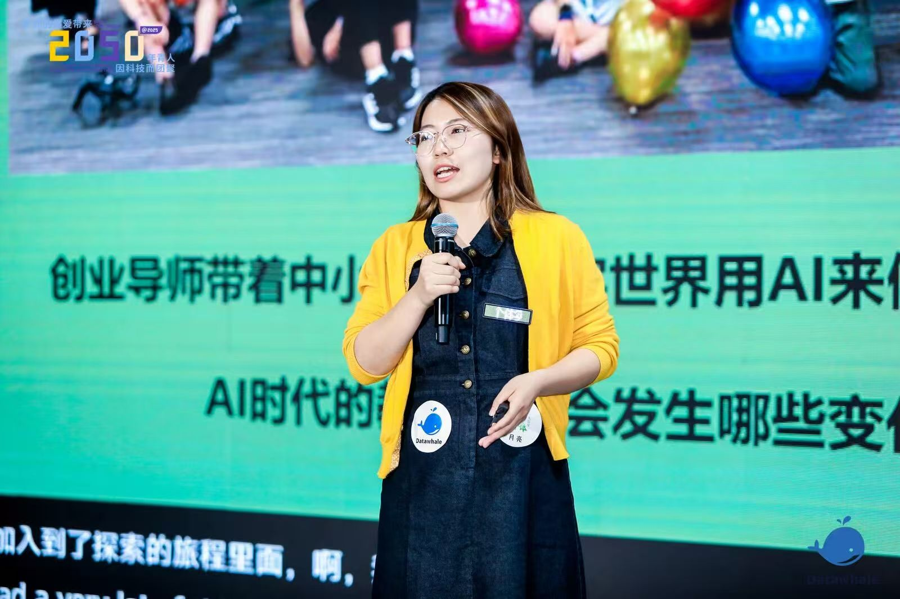
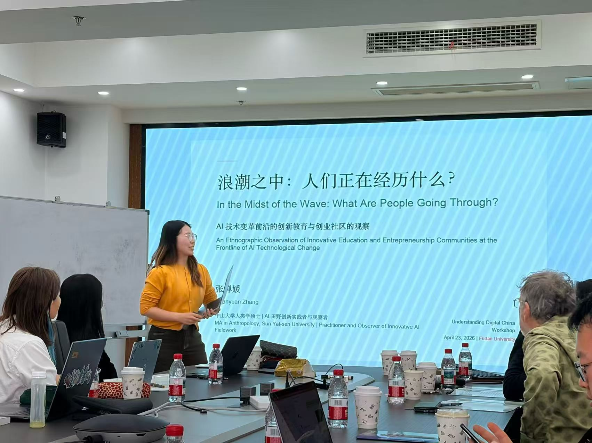

我更习惯先到现场，再决定应该写什么、组织什么、做什么工具。
Selected work / 2025—2026
先看我做过的事。
下面四件事，分别发生在一个社区、一次深访、七天营地和大型开发者活动里。它们留下了人、内容、工具，也留下了没有做完的部分。
社区 · 上海 · 2025
超级个体实验室
从一场 30 人的客厅开始。
 与 Research AI+ 共创的活动现场。百人场仍被拆成小组，让交流发生在桌边和人群之间。
与 Research AI+ 共创的活动现场。百人场仍被拆成小组，让交流发生在桌边和人群之间。
2025 年，我在上海交大工研院期间发起并参与运营超级个体实验室。那时，一批年轻 AI Builder 已经在做原型，却分散在高校、黑客松、开源社区和数字游民网络里，彼此很少真正认识。
我们最先做的是 30—40 人的「AI 跨界客厅」。没有很长的演讲，大家席地而坐，带着正在做的项目和还没想清楚的问题来聊天。活动常常结束了，人还不愿意走。
我负责定义最初的人群、逐一认识新成员、设计主题、连接伙伴和主持现场。群里开始形成讨论以后，我会刻意往后退，把问题留给更懂这件事的人，也和活跃成员、社区主理人一起做后来的活动。
约 100 天社群形成 400 余人规模
近 500 人随后累计连接与触达；不是长期活跃人数
10+ 场策划或联合参与的活动
- 进入方式
- 前期从已有关系和活动现场冷启动；后期更审慎地邀请我认识、了解过其项目的人进入。
- 共同运营
- 识别活跃成员和小型主理人，和 Research AI+ 等社区共创活动，也为更垂直的讨论另建小群。
- 我的边界
- 人群判断和关系仍然高度依赖我本人。活动之后，没有形成一套团队可以接手的分层回访机制。
它做出了一个入口，也让我第一次真正碰到社区的上限：人来了以后，关系怎样继续？
人物研究 · Builder story
默子与 Redink
我想知道，一个人为什么会走上这条路。
“我觉得，我本来就在广阔的地方。”
凌晨四点半，杭州的出租屋里，默子正趁用户起床前修完刚刚反馈的 bug。写这篇稿子时，Redink 已经在 GitHub 上获得 4.5K+ Stars。Stars 是结果，我更想追的是它前面的连续性。
我和默子做了 2—3 轮访谈，每轮约 2 小时。我们从父母开过的县城网吧、初中搭博客、大学边接项目边学技术，一路聊到只有 40 个用户且收到不少差评的上一个工具，再回到 Redink 的开发、开源和迭代。
访谈之外，我也看了他的旧照片、聊天记录、产品页面、日记和公开仓库。三天做出 Redink 并不是突然发生的天才时刻；他很多年都在重复同一种动作：好奇、动手、发布、听反馈，再继续改。
2—3 轮深度访谈
约 2 小时每轮访谈
4.5K+Redink GitHub Stars
阅读默子的故事↗
现场工具 · 七天真实使用
营地成长反馈工具
老师已经很累了，反馈还没写。
白天，老师要陪学生找问题、做项目、处理现场变化。到了晚上，还要把一天里零散的观察重新写成家长能够读懂的个人反馈。这是营地里反复出现、也最消耗老师的一件事。
我也在一线参与教学。老师怎样观察一个学生、哪些话容易失真、什么内容必须由本人判断，我每天都能在现场看见。
七天里，这套流程每天都在使用，也每天根据新问题修改。AI 负责整理分散的信息，不负责替老师判断一个学生；观察来自人，最后的文字也由人确认。
白天 / 现场陪学生找问题、做原型，也记下他们真实的变化。
晚上 / 交付把分散观察整理成家长能读懂、老师敢确认的反馈。
- 老师按照提示口述当天观察
- 内容进入飞书，按学生归集
- 编辑器整理到反馈页
- 老师核对事实和措辞
- 形成待发送的个人反馈
目前只在一次七天营地中真实使用。进入其他团队之前，还要重新处理数据授权、角色权限、版本记录和审核责任。

Photo / 2050。开发者现场不只有技术议程，也有人如何进入开源、找到同伴和成为贡献者。
机构交付 · Datawhale × AMD
在别人的目标和截止时间里，完成一篇长文。
这不是我自己发起的项目。5 月 19 日，我以 Datawhale 生态伙伴和作者的身份进入 AMD AI 开发者日。现场有两三千名参与者，也同时存在企业、开源社区、贡献者和普通开发者等多条叙事线。
我在现场记录人物和事件，回到 Datawhale 与 AMD 的合作时间线，再把算力、开源模型与学习社区之间的关系写回几个具体的人身上。
这项工作的难点不是把大会写得热闹，而是在发布时间、技术事实和多方关系之间，找到一条读者能进入的线。
我的交付边界
我负责 AMD 开发者日的现场采写、叙事组织与公开内容；大会运营和合作谈判不在我的职责里。
阅读公开长文《七年时间，我们和苏妈握手了！》↗
Field route
先学会把一个人听完。
后来开始自己搭东西。

复旦大学工作坊，2026。分享我在 AI 创新教育与创业社区里看到的变化。
- 起点 / 大理
先和一个人待久一点
最早在深度媒体、创新教育和数字游民社区里，我常常从生活史聊起：哪些转折真的改变了一个人，他为什么会做后来的选择。
- 后来 / AI 营地
跟着一个想法，直到它变成东西
我参与过 6 次 AI 营地与黑客松，观察 80 余名青少年的创造过程：他们怎样提出问题、使用工具、做出原型，又怎样面对第一轮反馈。
- 2025 / 上海
第一次自己搭一个入口
我发起超级个体实验室。人来了，活动也发生了；但活动结束以后，关系怎么办？这个问题一直留到现在。
- 现在
继续进入真实的组织现场
我继续进入早期团队、开发者社区和 AI for Good 项目，研究、采访、写作，也把反复遇到的问题做成档案和小工具。Vitality Studio 是我暂时给这组实践起的名字。
最近在做
还在现场里的事。
早期 Builder 人物继续做多轮访谈，整理一个人如何形成判断、做出产品和接住真实反馈。
Datawhale继续进入开发者活动与人物现场，完成研究、采访和公开内容。
生命力博物馆把营地、人物和作品的制作过程整理成可以继续访问的线上展馆。
我还在继续进入现场，也继续把遇见的人和问题留下来。
MOON / FIELD NOTES & SELECTED WORK / 2026